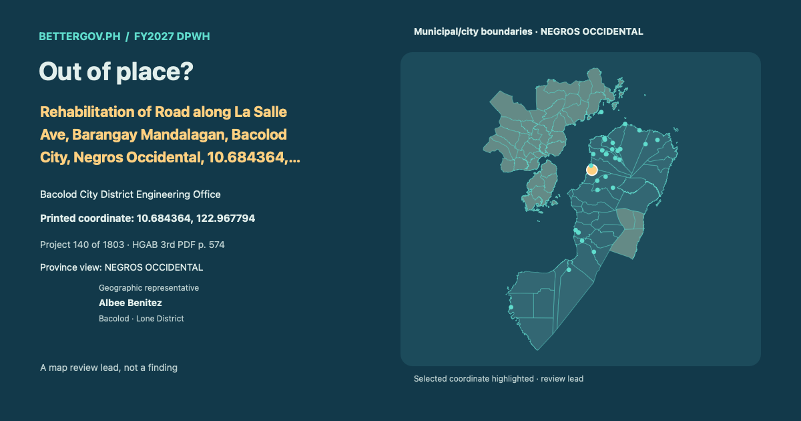

Out of place? · Rehabilitation of Road along La Salle Ave, Barangay Mandalagan, Bacolod City, Negros Occidental, 10.684364, 122.967794

Geographic representative
 Open interactive map and project card ↗
Open interactive map and project card ↗Bacolod City District Engineering Office · Geographic representative: Albee Benitez · Bacolod · Lone District. Printed coordinate 10.684364, 122.967794. Geographic coverage is not sponsorship. Proposed allocation. Coordinate signals are review leads, not findings.